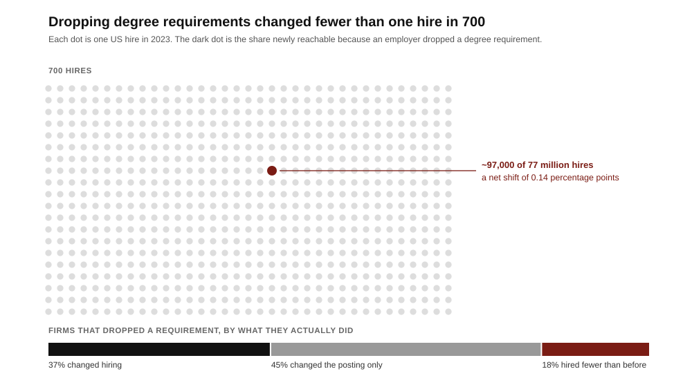

**Founder audience: builders of education, hiring, and credentialing products. In 1215 the papal legate Robert de Courçon fixed the Paris arts course at six years and set twenty as the minimum age for the licentia docendi, the licence to teach. The rank below that licence was the baccalarius, a word taken from the guilds, where bachelier named an apprentice, and the Paris bachelor’s obligation was to teach the students beneath him while he waited for the licence above him. The university was not selling lectures; masters taught outside it, for money. It was selling a position on a licensing ladder, with a labour obligation attached. That is still the product. It is also why a decade of credential innovation that rebuilt the teaching at enormous scale and a fraction of the price moved the American hiring filter by fewer than one hire in seven hundred.**
Read the 1215 statutes as a term sheet. They fix the length of study, the books, and the conditions for the licence to teach — a licence, not a transcript.12 Below it sat the bachelor, who had passed responsions and the examen baccalariandorum, had determined in public disputation, and was thereby cleared to teach juniors as preparation for the mastership.2 So the medieval degree bundled three things a modern founder should separate: an assessment, a labour contract, and an option on licensure.
The assessment was the cheapest component and the easiest to copy. The labour contract was valuable to the guild, not the student. The option on licensure was the entire asset, because the same body that examined you also controlled who could practise. Robert de Sorbon’s 1257 college — housing, meals and a library endowed for sixteen poor theology students — is the tell: teaching and lodging were a charitable cost centre bolted onto a licence that the university itself never had to subsidize.1
Bologna ran the counterfactual. There the students formed the guild, hired masters, set fees and enforced attendance.1 It is the buyer-owned marketplace, and it is not the model the modern university inherited. Every durable credential since is seller-owned, because a credential is only worth what the issuer can withhold, and buyers who own the issuer cannot credibly withhold anything from themselves. If your credentialing product lets learners set the bar, you have built Bologna.
The learner pays with tuition, time and forgone wages. The signal is consumed by someone else: an employer, a graduate committee, a licensing board, a visa officer. That split is the whole market structure, and it explains the apparent irrationality of the last decade.
A hiring manager using a degree filter is not estimating skill. They are minimizing the cost of a defensible mistake across many candidates under time pressure. On that objective a coarse filter with a known failure rate beats a precise filter nobody else recognizes, because the coarse filter is legible to peers, to legal, and to whoever reviews the hire afterwards. This is why accuracy arguments do not move filters, and why the Burning Glass retention finding — non-degreed hires outperforming on retention by 10 points — changed almost nothing.5 Being right is not the product. Being uncontroversial is.
The corollary for founders is unpleasant but clarifying: you cannot sell a credential to the person who wears it. The learner will pay, but the learner cannot make it valuable. Value comes only from the consumer of the signal changing behaviour, and that consumer switches in cohorts, not individually.
Western Governors University joined the guild first and built the school second. Founded in 1997 by 19 US governors, its founding act was regional accreditation — at one point holding it from four regional commissions simultaneously — which is what gives it the right to confer degrees.7 Only then did it attack the format: competency-based progression, flat tuition per six-month term, credit for demonstrated mastery rather than seat time. In 2024–25 it enrolled 210,208 students, 155,088 of them undergraduates.8 That is a top-five-scale American university, built on unbundling duration while leaving licensure completely intact. WGU proved the four-year package is not the product. It did not test whether the degree is.
Google Career Certificates built the school and rented back a twelfth of the guild card. The programme is credible: seven tracks, $49 a month, a 150-plus company employer consortium, and a Google-reported 70%-plus of graduates citing a positive career outcome within six months.9 It is also, by the American Council on Education’s recommendation, worth up to 15 college credits — five courses at bachelor’s level, roughly an eighth of a 120-credit degree.9 After a decade, millions of enrolments and one of the strongest brands on earth on the certificate, the maximum convertibility into the incumbent credential is about 12%. That is not a failure of instruction. It is the price of not being an accreditor.
The pair is the whole lesson. The organization that bought the licence and changed the pedagogy now educates a fifth of a million people. The organization that changed the pedagogy and skipped the licence has to negotiate for credit, one institution at a time.
Between 2022 and 2024 the removal of degree requirements became a public commitment: Maryland went first among states in 2022, at least twenty followed, and large employers announced in sequence. In Maryland, the share of state postings without a degree requirement moved from 32% to 47%.10 That is a real change to the advertisement.
Then the hiring was measured. Using career histories for 65 million US workers, Burning Glass Institute and HBS’s Project on Managing the Future of Work isolated 11,300 employer-occupation roles with observable hiring before and after a requirement was dropped. Within roles that actually dropped it, the share of non-degreed hires rose 3.5 points. But only 3.6% of roles dropped it, so the economy-wide effect was 0.14 points.5

For a founder, the diagnostic value is in the segmentation, not the headline. Firms split three ways: 37% leaders who changed practice, about 45% who changed language only, and about a fifth who backslid below their starting point.5 A credential product sold on the promise of skills-based hiring is therefore addressing a market roughly a third the size of the one that publicly announced itself, and the buyer inside that third is identifiable in advance: it is a firm that already rebuilt its interview loop, not one that issued a press release.
The degree has always been priced against a specific transaction: it converts a young person with no work record into an employable novice. That conversion is currently failing for reasons unrelated to credentials. Entry-level employment in AI-exposed occupations is running roughly 19% below its counterfactual for 22-to-25-year-olds, driven by firms hiring fewer juniors rather than cutting existing staff.6
Two consequences follow, and they point in opposite directions. The degree becomes less effective — it no longer reliably delivers the first job — while becoming harder to compete with, because when employers hire fewer juniors they screen harder, and hard screening favours the most legible filter available. Expect the next few years to look like rising dissatisfaction with the degree alongside rising insistence on it. Any credential thesis that assumes dissatisfaction converts into substitution is misreading the mechanism.
The genuine opening is elsewhere. If firms will not train juniors, the market for verified early work — the thing an apprenticeship used to produce and the medieval bachelorship literally was — has no supplier. That is a labour-supply product with a credential attached, not a credential product with a course attached.
| Phase | Action | Test |
|---|---|---|
| Before building | Name the decision-maker who consumes your signal and the filter they replace. | Can you name five firms, the specific role, and the incumbent screen it displaces — not five logos on a consortium page? |
| Wedge | Sell into roles where the incumbent filter is already broken and the employer has already rebuilt its interview loop. | Does the buyer have a structured work-sample stage today? If not, you are selling to a backslider. |
| Standard | Acquire or partner for the licensing right early, even at bad terms; build the pedagogy afterwards. | Does anything you issue convert into an incumbent credential at a stated rate — WGU’s 100% or Google’s 15 credits — or at zero? |
| Evidence | Publish outcomes with denominators and a comparison group, including non-completers. | Would your outcome claim survive the Burning Glass treatment: measured hires, not postings? |
| Durability | Attach the credential to supplied labour, not just assessed learning. | Does an employer receive work product during the programme, as a guild received teaching from its bachelors? |
Three rules fall out of eight centuries of this. Licensure is the asset; teaching is the cost centre — Sorbonne funded the housing with charity and kept the licence. Accuracy does not move filters; liability does — a filter changes when using it becomes more embarrassing than not using it, which is why the retention data mattered less than the announcements. And the credential that wins is the one that supplies labour, because the guild kept the bachelor rank for eight hundred years not to certify him but to have him teach the year below.